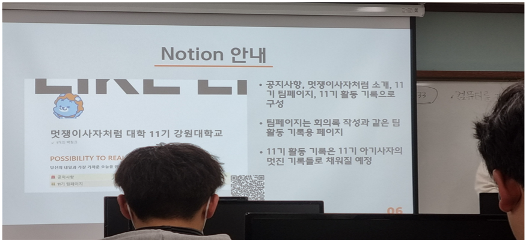

BYUNGSOO KIM
논리적인 알고리즘과 창의적인 아이디어만 있으면 원하는 프로그램을 만들 수 있다는 것이 좋아서 컴퓨터공학과에 진학하게 되었습니다. 1학년 때는 응용 프로그램, 서버, 네트워크, 어플리케이션 등등 여러 분야를 알아가다가 하루에도 수백만번씩 이상 보게 되는 웹사이트를 만든다면 많은 사람에게 재미있고 유용한 걸 보여주면 어떨까? 해서 웹 개발에 관심을 두게 되었습니다. 그리고 웹 페이지에 예쁘게 디자인 된 버튼이나 위젯들을 보고 직접 만들고 싶어서 UX/UI도 공부할 예정입니다.
TECH STACK
C language
Python
JAVA
HTML, CSS
Bakcend
아직 개발을 직접하는 단계는 아니지만 웹 애플리케이션이나 모바일 앱과 같은 소프트웨어의 뒷단을 구축하고 개발하는 것에 흥미를 가지고 있어 백엔드 프레임워크를 공부 중입니다. 그중에서 'spring'과 'django'를 공부를 진행하고 있습니다.
Game Develop
게임 개발은 창의적인 아이디어와 상상력을 현실화하는 과정입니다. 게임을 개발함으로써 자신의 창의성과 아이디어를 게임 세계에 구현할 수 있다는게 마음에 들었습니다. 또한 사용자들에게 흥미로운 스토리, 도적적인 퍼즐, 멋진 그래픽 등을 제공할 수 있습니다. 나의 능력으로 사용자들에게 즐거움과 만족감을 주는 경험을 제공하는 것이 좋아 unity엔진을 공부할 예정입니다.
1일 1커밋
일명 '잔디 꾸미기'로 컴퓨터의 폴더에 따로 저장하지 않고, 외부 저장공간에 자신이 코딩했던 자료들을 커밋하는 것입니다. 하루하루 꾸준히 커밋을 위의 사진처럼 커밋수에 따라 연한 녹색에서 진한 녹색으로 그려집니다. 이걸 꾸준히 하다보면 어느새 셀들이 녹색으로 가득 채워지는데 마치 잔디 같이 생겼다하여 '잔디 꾸미기'라고 합니다. 가득 채워진 셀들을 보면 꾸준함과 성취감이 들어서 취미로 하고 있습니다.
